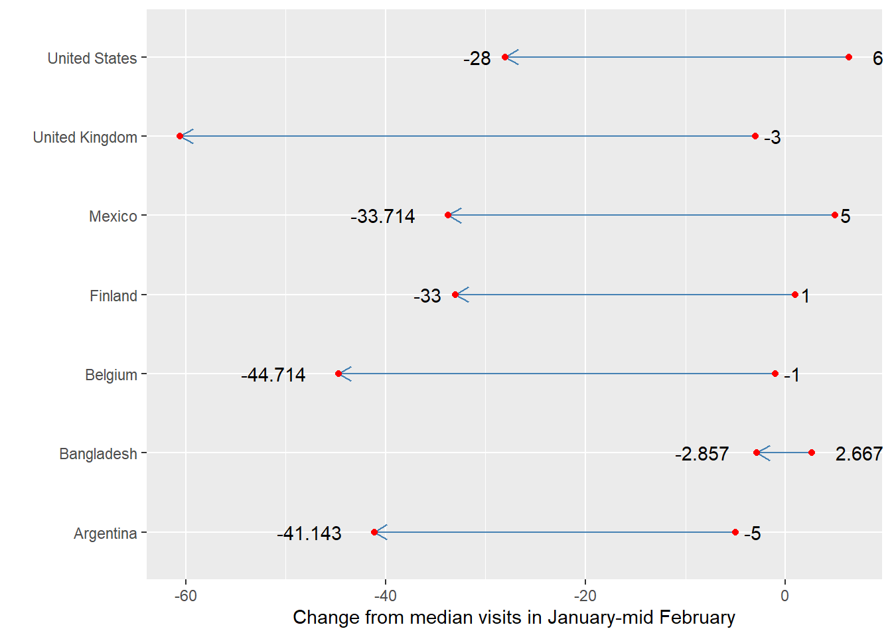
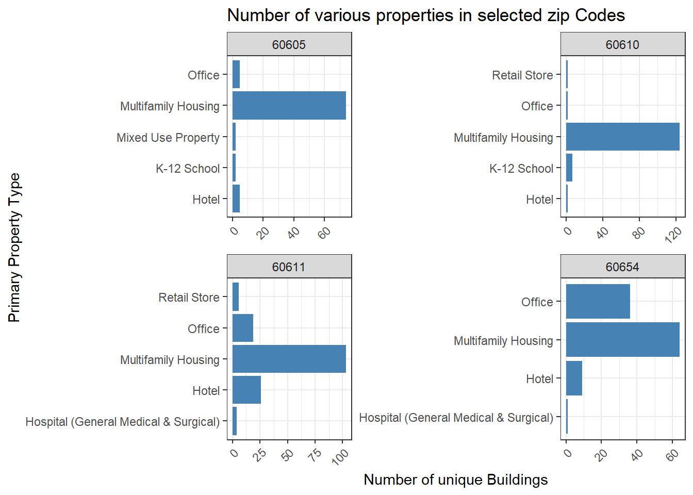
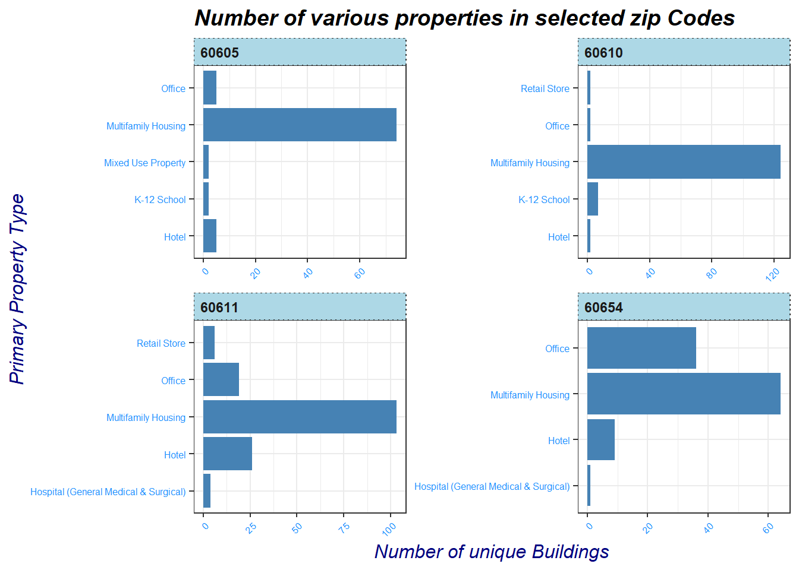
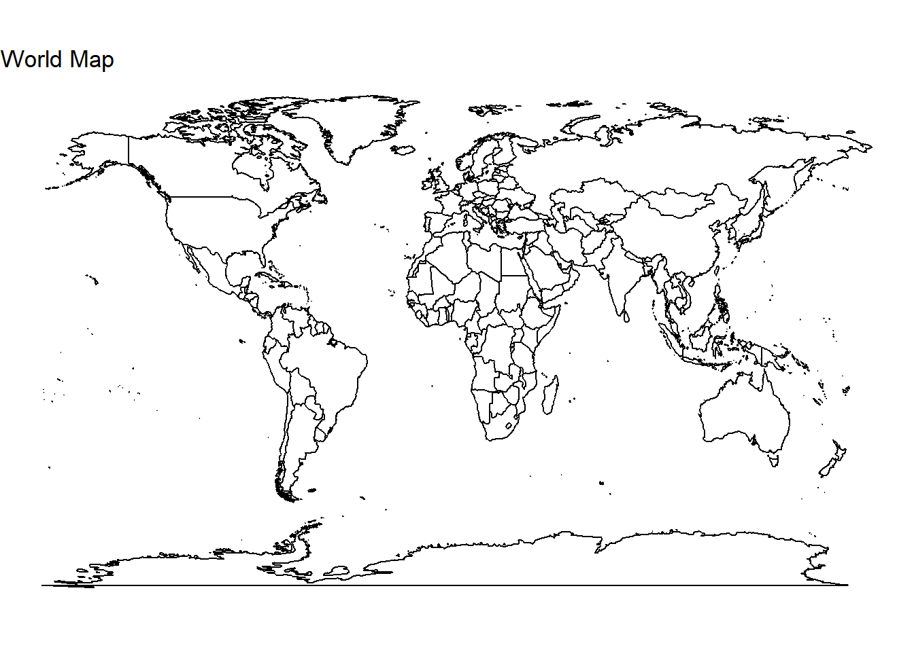

We learned about the fundamentals of creating plots in ggplot2. The library (a part of tidyverse) can be used to create a much larger variety of plots. Base R can also be used to create plots, although the functionalities are limited compared to ggplot2 and are seldom used to create graphics for publishing. In this tutorial, we will cover the following:
More chart types with ggplot2
Customizing ggplot2
Interactive visualization
Creating maps in ggplot
More chart types in ggplot2
The R Graph Gallery has collection of several graphs/charts created in R, most of them using ggplot2. The charts are categorized by what they are used to visualize (e.g. distribution, proportion, evolution, etc.) Take a look at several charts and code written to reproduce them. Did you see any chart types that you hadn’t seen before?
Comparing change using Cleveland Dot Plots
We discussed some ideas on Chart junk yesterday. Cleveland Dot Plots allow us to compare quantitative change or difference across categories.
The data I have used is a derivative of Global COVID Mobility Trends from Our World in Data. The data represents change in median visits to retail and recreation in February, 2020 and December, 2020 compared to median values in January to mid-February, 2020.
# Librarylibrary(tidyverse)# import datadata <-read_csv("change_retail_countries.csv")# converting data to wide formatretail_wide <- data %>%select(-code) %>%pivot_wider(names_from = month, values_from = retail_recreation)head(retail_wide)
# A tibble: 6 × 3
country Feb Dec
<chr> <dbl> <dbl>
1 Argentina -5 -41.1
2 Bangladesh 2.67 -2.86
3 Belgium -1 -44.7
4 Finland 1 -33
5 Mexico 5 -33.7
6 United Kingdom -3 -60.6
# Plotggplot(retail_wide) +geom_segment(aes(x=country, xend=country, y=Feb, yend=Dec), color="steelblue",arrow =arrow(length =unit(0.3, "cm"))) +geom_point( aes(x=country, y=Feb), color ="red") +geom_point( aes(x=country, y=Dec), color ="red") +geom_text(aes(x = country, y = Feb, label=Feb), hjust =-.5) +geom_text(aes(x = country, y = Dec, label=Dec), hjust =1.5) +coord_flip() +theme(legend.position ="none") +ylab("Change from median visits in January-mid February") +xlab("")

Exercise
How does geom_segment contribute to the graph?
How does the arrow head contribute to the graph? Does removing it make the chart better or worse?
Why did I use xlab("") with no content within quotes?
Improve the readability of the chart with a title and a theme
Write an example in which you can use a chart similar to this.
Small multiples
Small multiples help us compare subsets of data within a larger dataset. All the multiples use the same scale and axes, allowing us to compare subgroups in a single figure.
# read datadf <-read_csv("./chicago_benchmarking.csv")# Calculate the number of buildings in each zip codezip_counts <- df %>%group_by(zip_code) %>%summarise(count =n())# Find the top 4 zip codes with the most buildingstop_zips <- zip_counts %>%top_n(4, count)# Filter the original data to include only the top 6 zip codesdf_filtered <- df %>%filter(zip_code %in% top_zips$zip_code)# Group the filtered data by zip code and property typedf_grouped <- df_filtered %>%group_by(zip_code, primary_property_type) %>%summarise(building_count =n_distinct(id))# For each zip code, select the top 5 property types with the most buildingsdf_grouped <- df_grouped %>%group_by(zip_code) %>%top_n(5, building_count)# Create horizontal bar charts of the number of unique buildings in each property type for each of the top 6 zip codesp <-ggplot(df_grouped, aes(x = primary_property_type, y = building_count)) +geom_bar(stat ="identity", fill ='steelblue') +coord_flip() +facet_wrap(~ zip_code, scales ="free", ncol =2) +labs(x ="Primary Property Type", y ="Number of unique Buildings", title ="Number of various properties in selected zip Codes") +theme_bw() +theme(axis.text.x =element_text(angle =45, hjust =1))p

Exercise
What are Energy Star scores? Why are they important?
Create small multiples of scatter plots charting Energy Star scores and year different properties were built for 5 different property types.
Customizing ggplot
ggplot2 allows us to customize numerous things in plots. We will customize some of the plot elements. Most of the customizations happen by specifying attributes of plot element you want to customize in the theme layer of ggpplot.
p <- p +# aesthetics of axes titles# axis titletheme(axis.title =element_text(size =12, color ="navyblue", face ="italic"),#axis testaxis.text =element_text(color ="dodgerblue", size =6),# titleplot.title =element_text(face ="bold.italic", size =14),#strip (where zip codes are specified) text strip.text =element_text(face ="bold", hjust =0), #strip backgroundstrip.background =element_rect(fill ="lightblue", linetype ="dotted"))p

Exercise
The shades of blue are overused. Use your own judgment to change the colors.
use ?theme in console to find out other modifications you can make to a plot in ggplot
add a subtitle to the plot using one of the functions in theme documentation
How else can we customize the plot to make it more readable?
Interactive visualization
We have only made static visualizations until now. Those are very useful for publishing digitally or in paper. Interactive visualizations allow us to interact with the visualization and get more information as the audience needs within the same space used in publishing.
# load necessary librarieslibrary(plotly)
Attaching package: 'plotly'
The following object is masked from 'package:ggplot2':
last_plot
The following object is masked from 'package:stats':
filter
The following object is masked from 'package:graphics':
layout
# create a table with counts of unique buildings per zip codezipcode_counts <- df %>%group_by(zip_code) %>%summarise(count =n_distinct(id))# create the plotly donut chartfig <-plot_ly(zipcode_counts, labels =~zip_code, values =~count, type ='pie', hole =0.5)# customizationfig <- fig %>%layout(title ="Number of unique buildings in each zip code", xaxis =list(showgrid =FALSE, zeroline =FALSE, showticklabels =FALSE), yaxis =list(showgrid =FALSE, zeroline =FALSE, showticklabels =FALSE),showlegend =FALSE)# Print the figurefig
Pi charts and Donut charts are terrible ways to visualize data. Our brain finds it harder to interpret values in radial geometry (pies) compared to areas such as rectangles. It is hard to interpret small values in the charts because of how thin they can be. Avoid Pi charts, almost always.
In the above plot, interactive chart created using plotly helps us understand which zip codes the small slices belong to by hovering our cursor over the area. Interactivity can be useful sometimes in cases like that, but be aware of what interactivity is adding to your data communication.
Creating maps in ggplot2
ggplot2 can also be used to create maps.
# Load required librarieslibrary(maps)
Attaching package: 'maps'
The following object is masked from 'package:purrr':
map
# Get world map dataworld_map <-map_data("world")# Plot the mapggplot() +geom_polygon(data = world_map, aes(x=long, y = lat, group = group), fill="white", color="black") +coord_fixed(1.3) +labs(title ="World Map") +theme_void()

Maps such as these are created using geom_polygon as map areas (think, individual countries/regions) are essesntially polygones. While ggplot2 can be used to make maps, there are more specialized libraries such as tmap that can be used for making thematic maps. Making maps in tmap follows very similar protocols to creating charts with ggplot2. We will create thematic maps using tmap in later chapters.